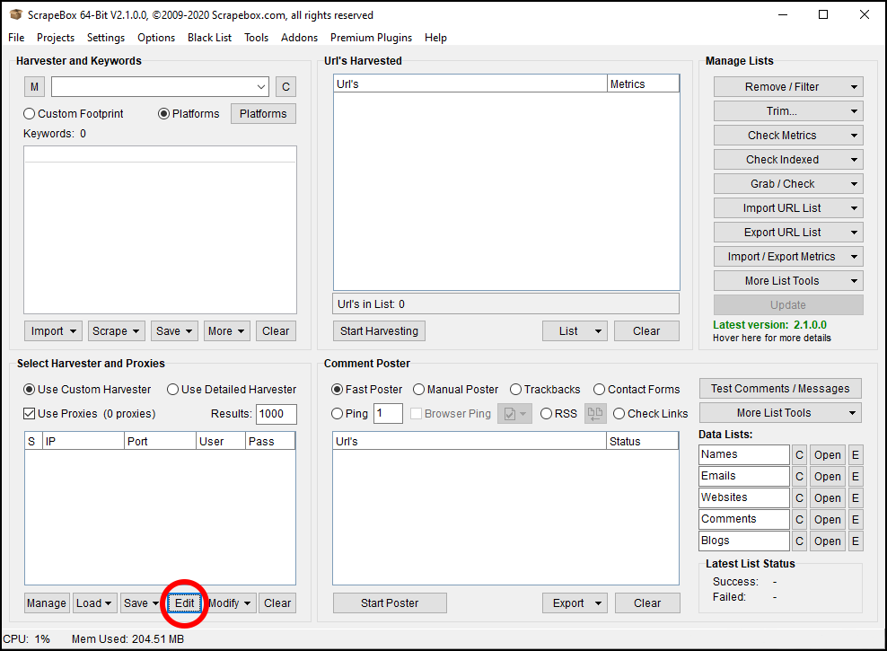
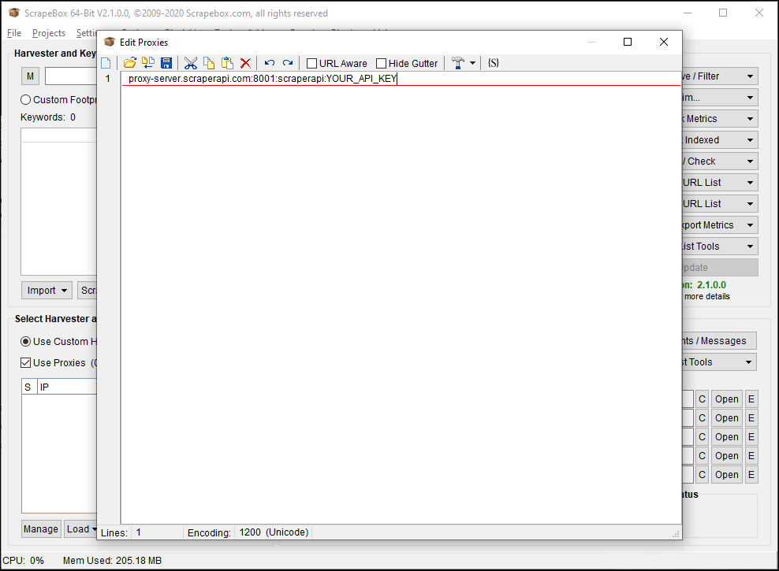
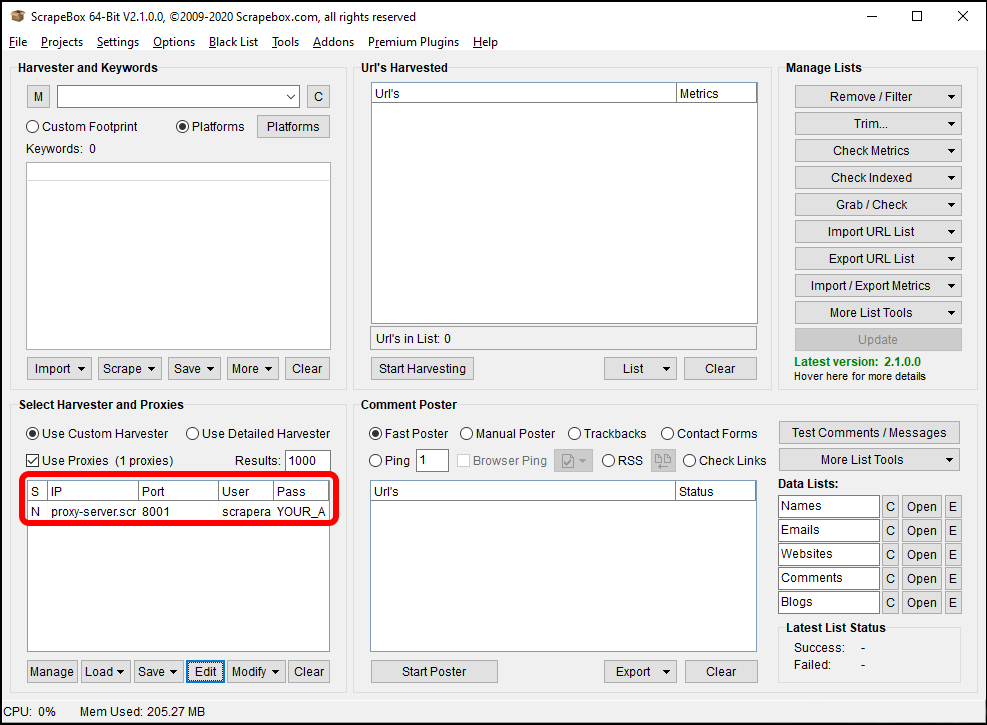
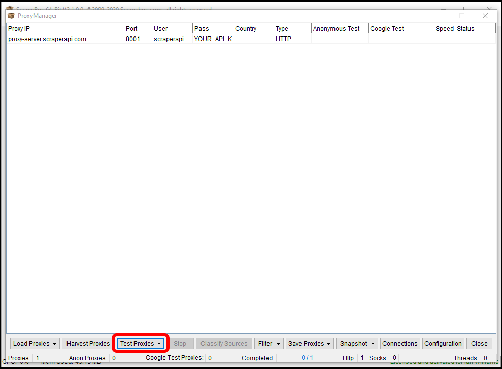
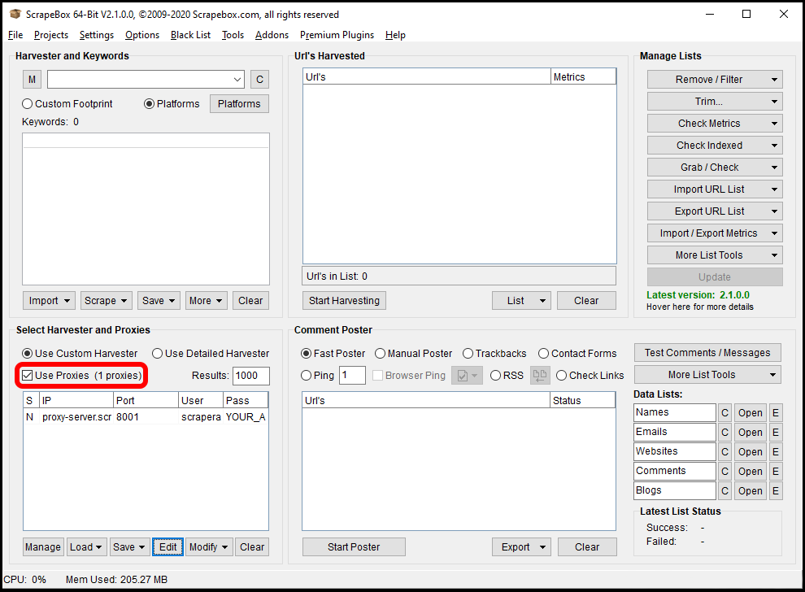
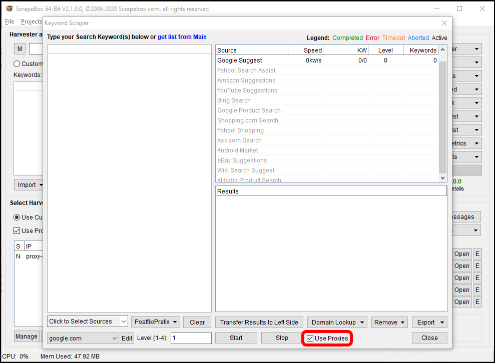
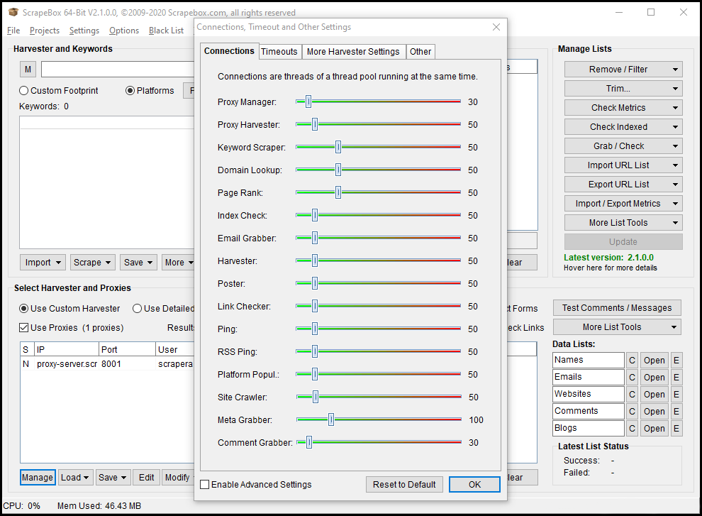

Setting up scrapebox to use Scraper API as a proxy is straightforward. Scrapebox generally recommends using multiple proxies to spread your scrapes across IP addresses and prevent bot detection, but when using Scraper API we do all that for you. So you only need to configure scrapebox to use one proxy: Scraper API.
To configure scrapebox to use Scraper API, you will need to have scrapebox installed and you will need a Scraper API key which you can get by signing up here.
Start scrapebox and once it’s loaded, click in the “Edit” button down in the bottom-left, in the “Select Harvester and Proxies” section.
Scrapebox will open a text editor window you can use to enter Scraper API’s proxy details. Click on the first line and enter the following:
Don’t forget to replace YOURAPIKEY with your API key, which you can get from the Scraper API website dashboard page, once you are logged in.
Click on the Disk (save) icon in the menu to save your new proxy list and close the editor. The proxy list on the main window will be updated to reflect your changes.
To test your connection to Scraper API, click on the "Manage” button at the bottom-left of the “Select Harvester and Proxies” section on the main window. This will open the Proxy Manager page.
Click on the “Test Proxies” button, then “Test all Proxies” to test your connection to Scraper API and make sure your connection details are correct. Once the tests have completed, you should see green “Passed” in each of the “Anonymous Test” and “Google Test” columns. If not, close the Proxy Manager window and re-check your proxy settings in the proxy text editor.
Once your proxy configuration has been saved and tested, make sure you configure scrapebox to use proxies by checking the “Use Proxies” box on the main window.
You can also use Scraper API in scrapebox’s keyword scraper. Click on the “Scrape” button just above “Select Harvester and Proxies”, then on “Keyword Scraper”. Check the “Use Proxies” box on the Keyword Scraper window to use Scraper API when getting keyword suggestions.
Lastly, scrapebox allows you to configure the number of concurrent connections it uses when scraping. This needs to be in line with the number of concurrent requests that you have in your Scraper API plan.
To configure scrapebox’s connections, click on the “Settings” menu at the top of the main page, then on “Connections, Timeout and Other Settings". Adjust the slider bars in the Connections window to match the concurrent requests limit for your plan. Note that nothing bad will happen if you don’t; scrapebox will get some 429 responses from Scraper API and will retry its requests.
